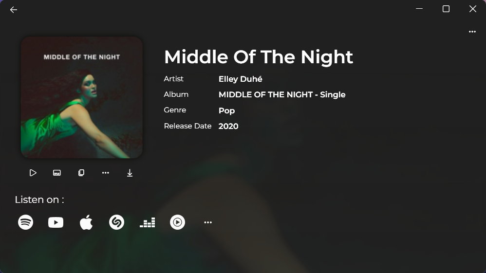
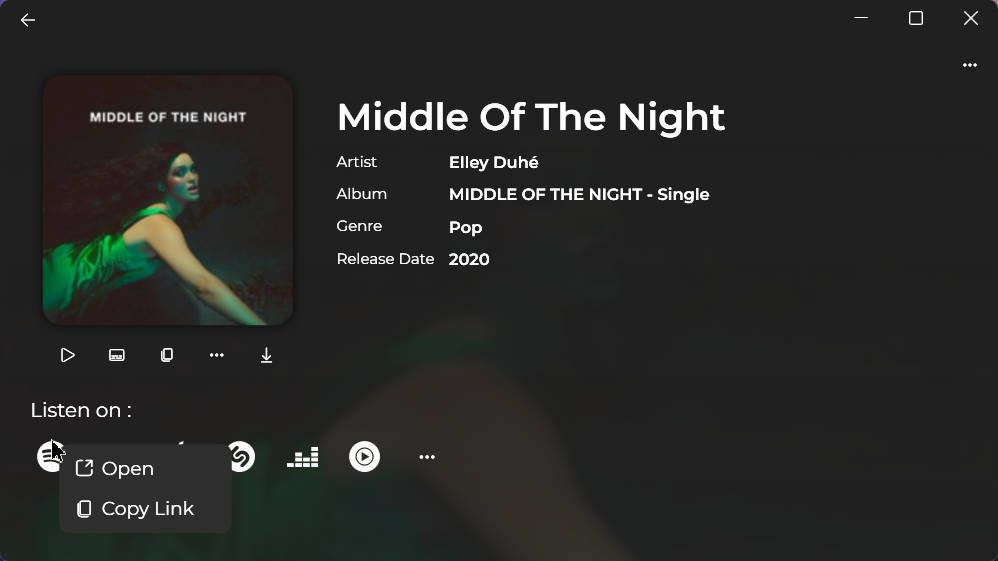

- It has very basic UI that you can easily adapt.

- When it found the music you get this screen.
- You can see the preview of the music with the first button under the image.
- You can see the lyric of the music with the second button under the image.
- You can copy the full name of the music with the third button under the image.
- You can see similar kinds of music with the fourth button under the image.
- You can download the music with the fifth button under the image.
- You can see the preview of the music with the first button under the image.
- You can see the lyric of the music with the second button under the image.
- You can copy the full name of the music with the third button under the image.
- You can see similar kinds of music with the fourth button under the image.
- You can download the music with the fifth button under the image.

- You can copy the name of the song name,artist,album,genre and release date by right clicking and click copy.

- You can also see the links for this music such as Spotify, Youtube, Apple Music, Shazam, Deezer, Youtube Music and so on.
- Simply click to open the link or right click to see more options.
- Simply click to open the link or right click to see more options.